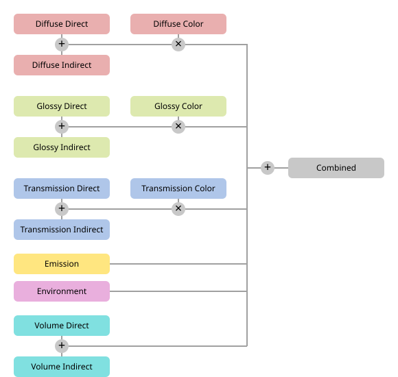
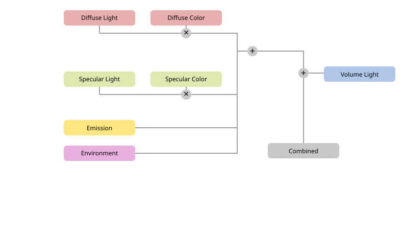

Passes¶
Tham khảo
- Panel:
Một Pass là một loại thông tin render trung gian được trích xuất thành một ảnh riêng biệt. Ví dụ bao gồm màu diffuse của các object trong scene, phân bố ánh sáng, depth map và normal map.
Các ảnh này có thể được truy cập bằng Render Layers Node trong Compositor và kết hợp theo một cách tùy chỉnh để thay thế cách kết hợp tiêu chuẩn.
Data¶
- Include
- Combined Cycles, EEVEE, Workbench
Kết quả đầu ra của render trước khi bất kỳ thao tác compositing nào được áp dụng.
- Depth Cycles, EEVEE, Workbench
Khoảng cách đến bề mặt nhìn thấy gần nhất. Có thể được dùng với Defocus Node để tạo hiệu ứng Depth of Field giả.
Ghi chú
Pass này tạo ra kết quả nhiễu nếu bản render tự nó dùng Depth of Field hoặc motion blur. Hãy dùng pass Mist để có ảnh sạch hơn.
- Mist Cycles, EEVEE
Khoảng cách đến bề mặt nhìn thấy gần nhất, được ánh xạ vào khoảng 0.0 - 1.0. Khi bật, các cài đặt sẽ xuất hiện trong tab World.
Pass này có thể được dùng để làm mờ dần các object ở xa hơn. Một cách thay thế là dùng slot Volume của shading node World Output.
- Position Cycles, EEVEE
Vị trí trong không gian world.
- Normal Cycles, EEVEE
Normal của bề mặt trong không gian world.
- Vector Cycles, EEVEE
Vector chuyển động cho Vector Blur Node. Bốn thành phần gồm các vector 2D cho biết chuyển động trong không gian màn hình dựa trên frame kế tiếp và frame trước đó.
Pass này bị tắt khi Motion Blur được bật.
- UV Cycles
Tọa độ UV trong UV map đang hoạt động của mỗi object, được biểu diễn qua kênh đỏ và kênh xanh lục của ảnh. (Kênh xanh dương lưu giá trị không đổi là 1 và không chứa thông tin nào.) Có thể được dùng với Map UV Node.
- Grease Pencil Cycles, EEVEE, Workbench
Chỉ xuất các stroke và phần fill nhìn thấy được (không bị che khuất) từ engine Grease Pencil vào một lớp ảnh riêng biệt.
Pass này hữu ích cho quy trình compositing khi bạn muốn tách riêng, tăng cường hoặc áp dụng hiệu ứng lên các phần tử Grease Pencil tách biệt khỏi phần còn lại của bản render.
Ghi chú
Với đa số scene, trộn pass này lên phần còn lại của ảnh bằng node Alpha Over sẽ tái tạo được kết quả render Combined. Tuy nhiên, một số chế độ trộn trong Grease Pencil có thể làm thay đổi độ màu sắc (chromaticity) của kênh alpha. Trong những trường hợp này, composite pass Grease Pencil riêng biệt có thể cho kết quả khác.
- Denoising Data Cycles, EEVEE
Bao gồm các pass phụ trợ dùng cho denoising, cùng với ảnh combined trước khi denoise. Các pass này có thể được dùng với Denoise Node như một phương án thay thế cho tự động denoise.
Noisy Image -- Kết quả render combined trước khi bất kỳ bước denoise nào được áp dụng.
Denoising Albedo -- Màu cơ bản diffuse của bề mặt không có ánh sáng hay shading.
Denoising Specular Albedo -- Màu cơ bản specular, biểu diễn màu bề mặt phản chiếu không có ánh sáng.
Denoising Normal -- Normal của bề mặt được dùng để giữ lại các cạnh và chi tiết nhỏ trong quá trình denoise.
Denoising Roughness -- Giá trị độ nhám bề mặt được dùng để cải thiện việc denoise các phản chiếu glossy.
Denoising Depth -- Khoảng cách từ camera, được dùng để giúp giữ lại chi tiết dựa trên độ sâu.
Các pass này cung cấp thêm thông tin cho bộ denoise, cho ra kết quả chất lượng cao hơn so với việc chỉ dùng ảnh nhiễu.
Ghi chú
Các pass này làm tăng mức dùng bộ nhớ và thời gian render. Chỉ bật chúng khi cần denoise trong Compositor.
- Indexes
- Object Index Cycles
Một map trong đó mỗi pixel lưu ID do người dùng định nghĩa của object tại pixel đó. Map này có thể được chuyển thành mask cho một object cụ thể bằng ID Mask Node.
- Material Index Cycles
Một map trong đó mỗi pixel lưu ID do người dùng định nghĩa của material tại pixel đó. Map này có thể được chuyển thành mask cho một material cụ thể bằng ID Mask Node.
Ghi chú
Các pass Depth, Position, Object Index và Material Index không được chống răng cưa (anti-aliasing).
- Debug
- Render Time Cycles
Ước tính thời gian tính bằng mili-giây để render mỗi pixel. Lưu ý rằng pass này không được hỗ trợ khi render bằng GPU.
- Sample Count Cycles
Số sample được tính cho mỗi pixel, chia cho số sample tối đa. Được dùng để phân tích adaptive sampling.
- Alpha Threshold Cycles
Các pass Depth, Position, Normal, Vector, UV và Index chỉ chịu tác động từ các bề mặt có độ mờ đục bằng hoặc cao hơn ngưỡng này. Với giá trị 0.0, bề mặt gặp đầu tiên sẽ luôn ghi vào các pass này bất kể độ mờ đục. Với giá trị cao hơn, các bề mặt gần như trong suốt sẽ bị bỏ qua cho đến khi gặp một bề mặt đục.
Light¶
Cycles¶
- Diffuse
- Direct
Cường độ và màu của ánh sáng chiếu vào một bề mặt có Diffuse hoặc Subsurface Scattering BSDF và chưa phản chiếu/đi qua bất kỳ bề mặt nào khác (bỏ qua các bề mặt Transparent). Màu của chính bề mặt không được tính vào.
- Indirect
Cường độ và màu của ánh sáng chiếu vào một bề mặt có Diffuse hoặc Subsurface Scattering BSDF và trước đó đã phản chiếu/đi qua một bề mặt khác (bỏ qua các bề mặt Transparent). Màu của chính bề mặt không được tính vào.
- Glossy
- Direct, Indirect, Color
Giống như trên, nhưng dành cho các glossy BSDF.
- Transmission
- Direct, Indirect, Color
Giống như trên, nhưng dành cho các transmissive BSDF.
BSDF Transparent không được tính vào; xem Light Paths để biết chi tiết. Để tạo một bề mặt trong suốt mà vẫn được tính vào pass này, hãy dùng Glass BSDF với IOR đặt bằng 1.
- Volume
- Direct, Indirect
Giống như trên, nhưng dành cho các volumetric BSDF.
- Other
- Emission
Emission từ các bề mặt nhìn thấy trực tiếp.
- Environment
Emission từ World Environment nhìn thấy trực tiếp. Khi Film được đặt thành Transparent (nghĩa là world bị loại khỏi bản render cuối cùng), pass này có thể được dùng để lấy màu môi trường và composite trở lại.
- Ambient Occlusion
Ambient occlusion từ các bề mặt nhìn thấy trực tiếp. Đây là một pass thang xám với giá trị từ 0 (bị che hoàn toàn) đến 1 (lộ hoàn toàn), khiến nó phù hợp để nhân với một ảnh màu trong Compositor (xem Mix Color Node).
Thay thế cho pass này, cũng có thể dùng Ambient Occlusion Node trong material.
- Shadow Catcher
Bóng được thu thập bởi các object có bật tùy chọn Mask -- Shadow Catcher. Có thể được nhân với đoạn phim có sẵn để (ví dụ) khiến một object được render đổ bóng lên nền đất đã quay sẵn.
EEVEE¶
- Diffuse
- Specular
- Light, Color
Giống như trên, nhưng dành cho các specular BSDF.
- Volume
- Light
Chứa các Volume object, cũng như mọi volume được tạo bởi các volume shader node (Principled Volume, Volume Absorption và Volume Scatter), dù chúng được dùng trong material hay trong nền World.
- Other
- Emission
Emission từ các bề mặt nhìn thấy trực tiếp.
- Environment
Emission từ World Environment nhìn thấy trực tiếp. Khi Film được đặt thành Transparent (nghĩa là world bị loại khỏi bản render cuối cùng), pass này có thể được dùng để lấy màu môi trường và composite trở lại.
- Shadow
Một pass có màu đen ở những vùng không nhận ánh sáng trực tiếp và màu trắng ở những vùng có. Chủ yếu hữu ích để composite các object có bóng vào đoạn phim có sẵn.
- Ambient Occlusion
Ambient occlusion từ các bề mặt nhìn thấy trực tiếp. Đây là một pass thang xám với giá trị từ 0 (bị che hoàn toàn) đến 1 (lộ hoàn toàn), khiến nó phù hợp để nhân với một ảnh màu trong Compositor (xem Mix Color Node).
Thay thế cho pass này, cũng có thể dùng Ambient Occlusion Node trong material.
- Transparent
Chứa các bề mặt Blended, để chúng có thể được chỉnh trong Compositor và sau đó trộn với các pass đục.
Pass này chỉ hỗ trợ độ mờ đục thang xám. Độ mờ đục có màu sẽ hiển thị khác so với trong pass Combined.
- Occlusion Distance
Khoảng cách tối đa để các object đóng góp vào pass Ambient Occlusion.
Cryptomatte¶
Cryptomatte là một chuẩn ảnh dùng để tạo mask hiệu quả cho các object hoặc material cụ thể. Mục đích của nó giống các pass Object Index và Material Index, nhưng có một số ưu điểm: dễ cài đặt hơn, có thể dùng với phần mềm compositing khác ngoài Blender, và hỗ trợ nhiều object trên mỗi pixel. Cụ thể, nó hoạt động với độ trong suốt, cũng như motion blur và depth of field khi dùng Cycles.
- Object
Render các cryptomatte pass để tách riêng các object.
- Material
Render các cryptomatte pass để tách riêng các material.
- Asset
Render các cryptomatte pass để tách riêng các nhóm object có cùng parent. Tùy chọn này không liên quan đến tính năng asset của Blender.
- Levels
Số object tối đa có thể phân biệt trên mỗi pixel. Node Render Layers sẽ xuất số ảnh Cryptomatte bằng một nửa con số này, có tên (ví dụ) CryptoObject00, CryptoObject01 v.v. -- lý do là một ảnh Cryptomatte có thể tham chiếu hai object trên mỗi pixel.
Ảnh đầu tiên tham chiếu, với mỗi pixel, hai object đóng góp nhiều nhất vào màu của pixel đó. Ảnh kế tiếp tham chiếu hai object tiếp theo, và cứ thế tiếp tục.
Xem thêm
Shader AOV¶
Shader AOV (Arbitrary Output Variables) là các render pass tùy chỉnh có thể chứa thông tin bổ sung để dùng trong compositing. Hãy tạo một pass trong panel Shader AOV, ghi vào nó từ một material bằng AOV Output Node, và cuối cùng đọc từ nó trong Compositor bằng socket trên node Render Layers.
- Name
Tên của render pass. Được dùng ở cả node AOV Output và node Render Layers. Tên có thể là bất kỳ gì miễn là không xung đột với các pass khác (đang bật).
- Data Type
Loại dữ liệu mà render pass lưu trên mỗi pixel. Dùng Color để lưu một màu, normal, hoặc loại vector khác. Dùng Value để lưu một con số đơn lẻ.
Light Groups¶
Cycles only
Một Light Group cung cấp render pass Combined giới hạn, trong đó scene chỉ được chiếu sáng bởi một số nguồn sáng nhất định. Nhiều pass như vậy sau đó có thể được kết hợp khi compositing để dựng một bản render đầy đủ với tất cả nguồn sáng. Cách đơn giản nhất là пpocto Add chúng lại với nhau bằng Mix Color Node, nhưng bằng cách tạo các tổ hợp phức tạp hơn, có thể thay đổi màu và cường độ của từng nguồn sáng riêng lẻ mà không cần render lại.
Để gán một Light object vào một Light Group mới hoặc đã có, dùng panel (chi tiết).
Để gán nền World vào một Light Group, dùng panel (chi tiết).
- Name
Tên của light group.
Light Group Sync¶
Các operator này có sẵn từ nút ở bên phải danh sách Light Group.
- Add Used Lightgroups
Tạo Light Group cho bất kỳ nguồn sáng nào tham chiếu đến một group không tồn tại.
- Remove Unused Lightgroups
Xóa bất kỳ Light Group nào không được nguồn sáng nào tham chiếu.
Kết hợp¶
Cycles¶
Các render pass khác nhau có thể được kết hợp để tạo ra ảnh cuối cùng như sau:

EEVEE¶
Các pass có thể được kết hợp để tạo ra ảnh cuối cùng như sau:

Giới hạn của EEVEE¶
Depth of Field và Motion Blur không được render trong các pass khác ngoài Combined. Chúng có thể được mô phỏng trong Compositor bằng Defocus Node và Vector Blur Node.
Các material trong suốt có Render Method đặt thành Blended không được render trong các pass khác ngoài Combined và Transparent. Hãy dùng phương pháp Dithered thay thế.
Node Shader To RGB chỉ hoạt động chính xác trong pass Combined vì EEVEE loại bỏ một phần của phương trình BSDF.
Tối đa có 16 AOV Color và 16 AOV Value (các render pass tùy chỉnh).